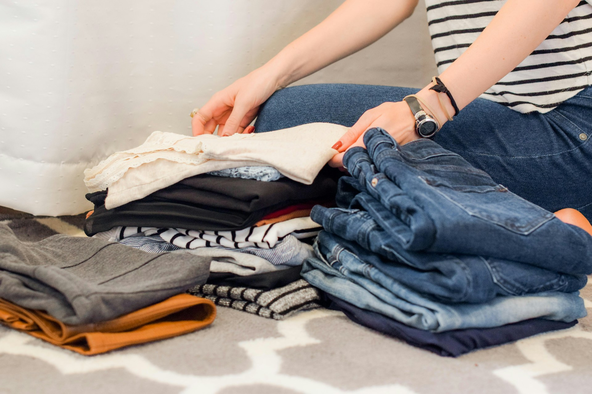
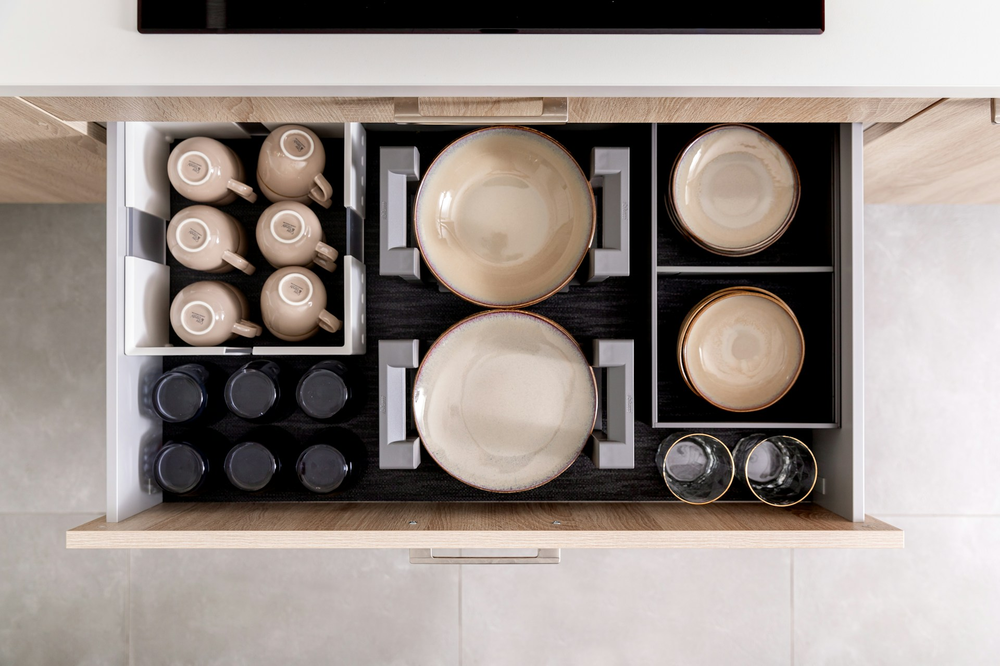

Paperwork and Digital Organisation
I support clients with paperwork and digital organisation.
- sorting paperwork
- creating filing systems
- organising digital spaces

I offer professional decluttering and organising support to help people make sense of their homes and the things within them. The work is shaped around how you live, what feels difficult, and what will make everyday life easier over time.
Decluttering support helps you work through belongings with clarity and confidence.

Once clutter is reduced, I help organise what remains so your space is easier to use day to day.

I help plan how space can be used more effectively.
I support clients with paperwork and digital organisation.
Support is available to refine systems and adapt over time.
Support is shaped around what matters most to you.